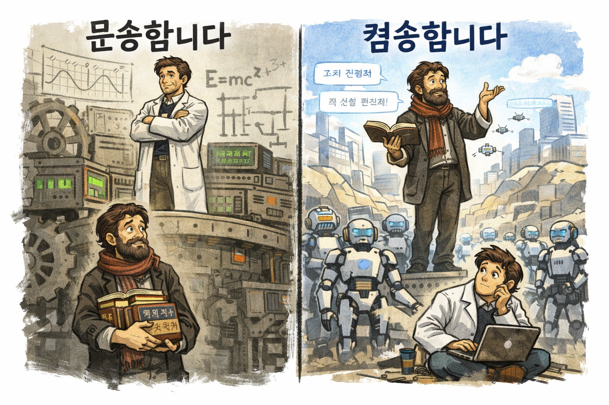
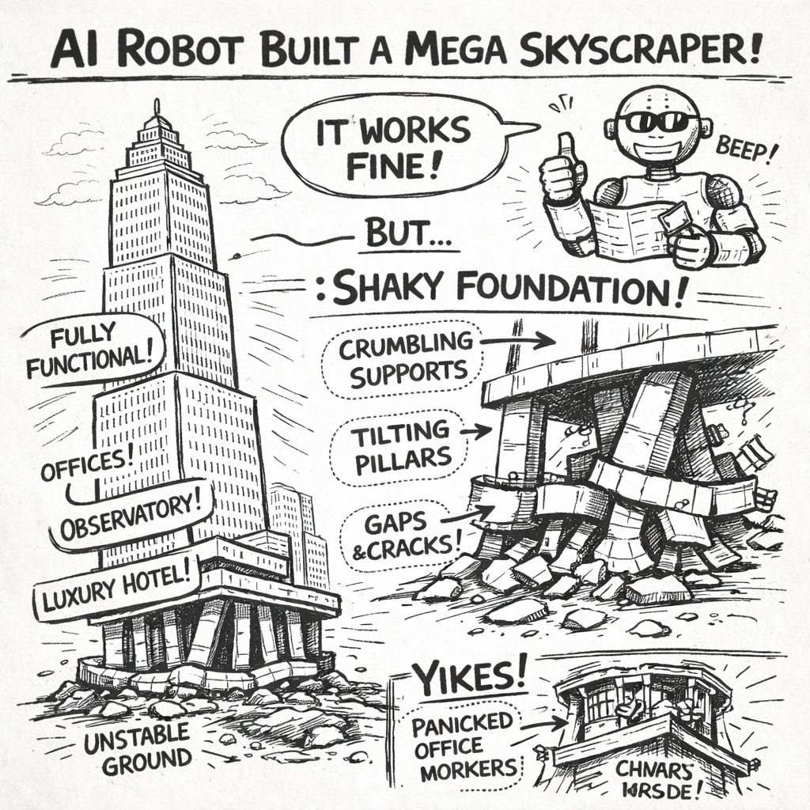
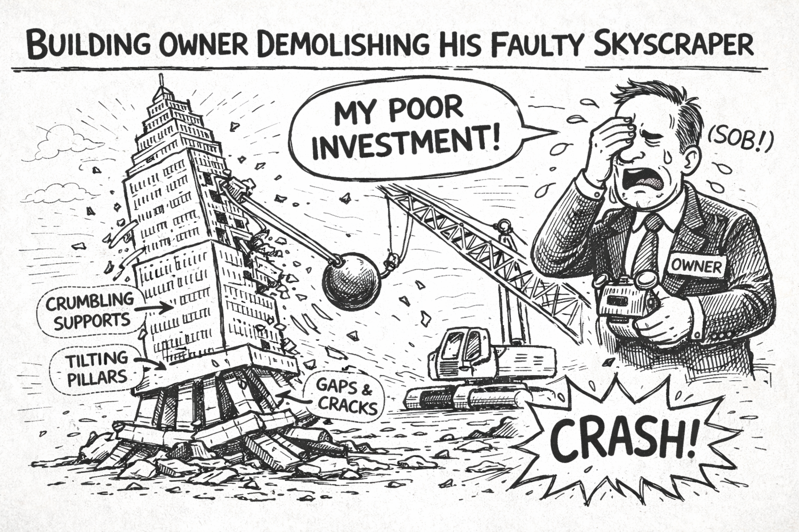
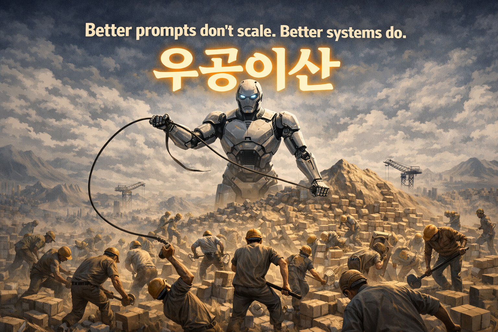

실행이 10분이 된 세상개발자의 마인드셋
하네스는 도구다. 도구를 쓰는 건 사람이다. 그리고 AI 시대의 사람에게 요구되는 사고방식이 있다.
도구만으로는 부족하다
시리즈 4까지 우리는 시스템에 대해 이야기했다. Phase로 나누고, 추적성으로 잇고, LOOPBACK으로 수정하고, Gate로 판단한다. 이것이 하네스 엔지니어링의 구조다.
하지만 구조가 아무리 정교해도 그것을 쓰는 사람이 준비되지 않으면 무너진다. 좋은 하네스를 갖고도 잘못된 질문을 던지면 잘못된 답이 나온다. AI에게 "이거 만들어줘"라고 던지고 검증 없이 커밋하면, Phase 시스템이 있든 없든 결과는 엉망이다.
YouTube에는 매일 "이 툴 하나로 개발자 필요 없다", "AI가 다 대체한다" 같은 썸네일이 넘쳐난다. 그리고 그 자극적인 콘텐츠를 만드는 사람도 결국 개발자다.
이 편은 새로운 툴 소개가 아니다. 툴이 아무리 바뀌어도 흔들리지 않는 개발자의 마인드셋에 관한 이야기다.
병목의 이동 — 실행의 장벽이 사라졌다
예전엔 아이디어가 있어도 구현까지 몇 주가 걸렸다. 지금은 다르다.
아이디어 → 10분 → 동작하는 결과물
단순히 빨라진 게 아니다. 병목 자체가 바뀌었다.
[ 과거 ]
아이디어 → [ 구현이라는 거대한 벽 ] → 결과
← 여기가 병목이었다
"어떻게 만드냐"가 전부였다
[ 현재 ]
아이디어 → [ AI Agent ] → 결과
↑
여기가 새로운 병목이다
"무엇을 만드냐"가 전부다예전에는 구현 능력이 개발자의 가치였다. "어떻게 만드냐"를 아는 사람이 경쟁력이었다. 하지만 AI가 실행을 담당하면서, 구현 능력만으로는 차별점이 사라졌다.
그렇다면 개발자에게 남은 것은 무엇인가? "무엇을 만들 것인가"를 정의하는 능력이다. 그리고 이것은 생각보다 어렵다.
개발은 민주화됐지만, 배포는 달라지지 않았다
AI로 코드 짜는 건 누구나 할 수 있게 됐다. 블로그, SaaS, 챗봇, 자동화 스크립트 — 몇 분이면 동작하는 것을 만든다. 이것은 명백한 민주화다.
그런데 그 코드를 실제 사용자 환경에 올리는 순간, 완전히 다른 세계가 펼쳐진다.
- 로컬에서 됐는데 서버에서 안 된다
- 혼자 쓸 때는 됐는데 100명이 쓰니까 느려진다
- 100명까지는 됐는데 1000명에서 터진다
- 어제까진 됐는데 오늘 데이터가 바뀌니까 깨진다
- 한 사용자가 특이한 입력을 넣으니까 전체가 멈춘다
개발의 장벽은 낮아졌지만, 배포엔 여전히 책임과 실패의 비용이 따른다. AI가 코드를 짜줬다는 사실이 그 비용을 줄여주진 않는다.
그리고 한 가지 더. 만드는 것보다 유지하는 것의 비용이 훨씬 크다. 코드는 한 번 쓰이는 게 아니라 수년간 살아있다. 그 기간 동안 수정되고, 확장되고, 디버깅된다. 초기에 10분 만에 만든 코드가 이후 10개월의 유지보수 악몽이 되는 경우는 흔하다.
AI가 만들어주는 것은 "첫 번째 10분"이다. 나머지 "10개월"은 여전히 개발자의 몫이다.
여섯 가지 마인드셋
AI 시대의 개발자에게 필요한 사고방식은 여섯 가지로 정리된다. 각각이 독립된 것이 아니라, 서로 연결된 하나의 태도다.
1. "어떻게"가 아니라 "무엇을"

AI는 실행을 채워준다. 하지만 AI가 근본적으로 모르는 것이 있다.
- 이 기능이 지금 이 시점에 필요한 게 맞아?
- 이 문제의 진짜 원인이 여기야?
- 이 방향으로 가면 3개월 후에 기술 부채가 쌓여.
- 사용자가 원하는 게 진짜 이건가?
컨텍스트, 판단, 책임의 영역은 온전히 사람의 몫이다. 그리고 이것들은 "무엇을 만들 것인가"라는 단일 질문으로 수렴한다.
워크플로우도 재편된다.
[ 과거 ]
요구사항 → 설계 → 구현 → 테스트
────────────── ← 여기가 개발자의 에너지 중심
[ 현재 ]
"무엇을" 정의 → Agent 위임 → 결과 검증
────────── ──────────
↑ ↑
여기가 에너지 중심 여기도 에너지 중심
(앞단) (뒷단)앞단(정의)과 뒷단(검증)에 개발자의 에너지가 집중되고, 중간 구현은 점점 얇아진다. 질문을 설계하고 결과를 판단하는 사람이 가치를 만든다.
2. Iteration을 편하게 받아들이는 마음

완벽주의는 AI 시대에 독이다.
예전에는 한 번 구현에 들어가면 되돌리기 어려웠다. 그래서 설계에 오래 고민했다. 완벽한 계획을 세우고 나서야 코딩을 시작하는 것이 미덕이었다.
지금은 다르다. 실행 비용이 10분이다. 완벽한 계획을 3시간 고민하는 것보다, 30분 만에 세 번 시도해보는 것이 낫다. 처음부터 완벽한 질문을 만들려고 시간을 쏟는 것보다, 일단 던지고 결과를 보고 다듬는 것이 훨씬 효율적이다.
[ 완벽주의자의 시간 분배 ]
계획 ████████████████████ 10시간
실행 ██ 1시간
= 11시간 = 1번 시도
[ 반복자의 시간 분배 ]
계획 ██ 1시간
실행 █ 0.5시간
검토 █ 0.5시간
(반복 5회)
= 10시간 = 5번 시도5번 시도한 사람이 훨씬 멀리 간다. 각 시도에서 배운 것이 다음 시도를 더 날카롭게 만든다.
빠르게 만들고, 빠르게 틀리고, 빠르게 고친다. 이 루프를 편하게 받아들이는 사람이 훨씬 멀리 간다.
3. 질문을 설계하는 능력
좋은 질문이 좋은 결과를 만든다.
AI에게 "이거 만들어줘"가 아니라 — 왜 만드는지, 어떤 제약이 있는지, 무엇이 성공인지를 명확히 정의하고 전달하는 능력. 이건 AI뿐 아니라 팀원에게, 그리고 자기 자신에게도 똑같이 적용된다.
좋은 질문은 이런 것들을 포함한다:
- Why — 왜 이것을 만드는가? 어떤 문제를 해결하는가?
- What — 구체적으로 무엇을 원하는가? 무엇은 범위 밖인가?
- Constraints — 어떤 제약이 있는가? 성능, 메모리, 호환성, 보안?
- Success Criteria — 무엇을 보면 "성공했다"고 판단할 수 있는가?
- Failure Modes — 어떤 상황에서 실패할 수 있는가? 그럴 때 어떻게 해야 하는가?
이 질문들에 스스로 답할 수 있는 사람이, AI에게도 좋은 결과를 받을 수 있다. 왜냐하면 좋은 프롬프트는 결국 이 질문들에 대한 명시적 답이기 때문이다.
AI 시대의 핵심 역량은 결국 "생각을 언어로 구조화하는 것"으로 수렴하고 있다.
4. 결과에 책임지는 자세

"AI가 짠 코드라서요"는 변명이 안 된다.
AI가 준 결과물이 그럴듯해 보일 때가 가장 위험한 순간이다. 검증하기 귀찮아지고, 슬쩍 넘어가고 싶어지기 때문이다. 프로덕션에 올렸을 때 문제가 터져도, 커밋한 사람은 AI가 아니라 개발자다.
AI를 쓴다는 건 실행 속도를 빌리는 거지, 판단을 빌리는 게 아니다.
2번(Iteration), 3번(질문 설계), 4번(책임)은 하나의 사이클이다.
질문을 잘 설계한다 (3번)
↓
빠르게 결과를 낸다 (2번)
↓
그 결과에 책임진다 (4번)
↓
다음 질문을 더 낫게 설계한다 (3번)
...셋 중 하나라도 빠지면 무너진다.
- 질문 설계 없이 반복하면 → 무의미한 시행착오의 반복
- 반복 없이 질문만 설계하면 → 영원히 계획만 세우다 끝난다
- 책임 없이 실행하면 → AI가 내놓은 것을 맹신하다 사고 난다
5. 본질을 이해하면 적응력이 생긴다
툴을 10개 써본 사람은 10개의 사용법을 안다. 하지만 하나를 깊게 쓴 사람은 Agent의 태생적 한계를 본다. 컨텍스트의 한계, 판단의 한계, 메모리의 한계.
그리고 다른 툴들을 보면 결국 그 한계를 각자의 방식으로 풀려는 시도들이라는 것을 알게 된다.
- 어떤 툴은 RAG를 더 정교하게 만든다 → 컨텍스트 엔지니어링 레이어의 진전
- 어떤 툴은 프롬프트 템플릿을 제공한다 → 프롬프트 엔지니어링 레이어의 도구
- 어떤 툴은 워크플로우를 구조화한다 → 하네스 엔지니어링 레이어의 접근
본질을 아는 사람에게 새 툴은 "한계를 어떻게 푼 건지" 보이는 대상이다. 본질을 모르는 사람에게 새 툴은 "또 배워야 할 것"일 뿐이다.
툴이 달라 보여도 풀려는 문제는 같다. 그래서 반응이 달라진다.
- 유행을 쫓는 개발자 → "이거 써봐야 하나?"
- 본질을 아는 개발자 → "이 툴은 그 한계를 어떻게 풀었지?"
같은 시간 동안 전자는 툴 10개의 사용법을 익히고, 후자는 AI Agent의 본질적 한계와 그 해결 방향을 익힌다. 5년 후 둘의 차이는 극적이다.
6. 자극적인 썸네일에 흔들리지 않는 마인드

새 툴이 나올 때마다 FOMO가 생긴다.
지금 쓰는 게 불안해지고, 새 걸 써야 할 것 같고, 또 새로운 게 나오고...
이 루프에서 못 빠져나오면 아무것도 깊게 못 쓰고, 아무 본질도 못 파악하는 상태가 된다. 매일 새로운 것을 배우는데, 매일 같은 깊이에 머문다.
진짜 위기는 AI가 아니다.
- 새 툴 유행만 쫓으면서 본질을 모르는 개발자
- AI 결과물을 검증 없이 믿는 개발자
- "어떻게"만 알고 "무엇을" 못 정의하는 개발자
이쪽이 진짜 위기에 가깝다. 그리고 아이러니하게도, 이런 개발자일수록 AI가 자신을 대체할까 봐 가장 두려워한다. 본질을 모르니까, AI의 한계도 보이지 않는 것이다.
실행이 싸질수록 판단이 비싸진다
지금까지의 모든 마인드셋은 하나의 명제로 수렴한다.
실행이 싸질수록 판단이 비싸진다.
이것은 경제학의 기본 원리다. 한쪽이 흔해지면 반대쪽의 가치가 올라간다. 물이 흔한 지역에서는 물이 싸고 땅이 비싸다. 땅이 흔한 지역에서는 땅이 싸고 물이 비싸다.
개발의 세계에서 "실행"은 더 이상 희소한 자원이 아니다. AI가 무제한에 가깝게 공급하기 때문이다. 그러면 가치는 어디로 이동하는가? 판단이다.
- 무엇을 만들지 판단하는 능력
- 어느 방향으로 갈지 판단하는 능력
- AI의 결과가 맞는지 판단하는 능력
- 언제 AI를 믿고 언제 의심할지 판단하는 능력
- 이 방향으로 가면 3개월 후 어떻게 될지 판단하는 능력
이 모든 판단이 개발자의 영역이다. 그리고 이 판단력은 AI가 복제할 수 없다. 왜냐하면 판단은 HBM에 담기지 않는 것들 — 경험, 직관, 맥락, 책임 — 에서 나오기 때문이다.
과거 현재
────── ──────
실행이 비쌌다 실행이 싸다
→ 실행 능력이 가치 → 판단 능력이 가치
→ "어떻게 만드냐"가 경쟁력 → "무엇을 만들지 판단하는가"가 경쟁력AI는 개발자의 실행 속도를 빌려준다. 하지만 판단은 빌려주지 않는다. 그래서 AI가 발전할수록 개발자의 판단력은 더 비싸진다.
흔들리지 않는 개발자가 되는 법
이 시리즈를 시작할 때 한 질문이 있었다. "AI가 개발자를 대체할 것인가?"
여기까지의 논의를 종합하면 답은 명확하다.
AI는 개발자의 실행 능력을 대체한다. 판단 능력은 오히려 더 비싸지게 만든다.
- 실행 능력만 갖춘 개발자 → AI가 대체한다
- 판단 능력까지 갖춘 개발자 → AI가 레버리지 도구가 된다
AI Agent는 판단, 책임, 본질을 이해하는 능력을 대체하지 않는다. 오히려 그 능력들의 가치를 더 크게 만들고 있다.
흔들리지 않는 개발자가 되는 법은 간단하다. 본질을 알면 된다.
- AI의 물리적 한계를 안다 (시리즈 2)
- AI를 제대로 쓰는 세 가지 엔지니어링을 안다 (시리즈 3)
- 분할 정복의 원리와 구조를 안다 (시리즈 4)
- 실행이 싸진 시대에 필요한 판단 능력을 기른다 (시리즈 5)
본질을 알면 새 툴이 나와도 당황하지 않는다. 그 툴이 어느 레이어의 문제를 어떻게 푸는 건지 바로 보이기 때문이다. 본질을 알면 AI가 내놓은 결과를 맹신하지 않는다. AI가 무엇을 할 수 있고 무엇을 할 수 없는지 이미 이해하고 있기 때문이다.
본질을 아는 개발자에게 AI는 위협이 아니라 레버리지다.
시리즈의 마지막 편
지금까지 다섯 편을 통해 우리는 이런 여정을 밟아왔다.
시리즈 1. AI Agent의 명확한 한계 ← 문제를 직시한다
시리즈 2. 왜 한계가 발생하는가 ← 원인을 이해한다
시리즈 3. Prompt → Context → Harness ← 해결의 방향을 본다
시리즈 4. 나눠서 정복한다 ← 구조의 원리를 본다
시리즈 5. 개발자의 마인드셋 (← 지금 여기) ← 사람의 자세를 본다그런데 여기까지 이야기한 모든 철학과 원리를 실제로 구현한 시스템이 있다. 그것이 HALO Workflow다.
다음 마지막 편에서는 HALO Workflow가 어떻게 이 시리즈의 모든 개념을 하나의 일관된 시스템으로 실체화했는지 보여준다.